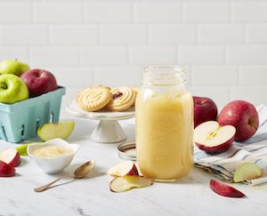

Applesauce

Description
A family favorite Applesauce, packed with real apples and lots of love. This homemade recipe is one both the kids and mom can enjoy because it is all natural and packed with delicious, fresh flavor, never any preservatives. This recipe is great solo or with some homemade cookies for a special treat!
Makes about 6 pint jars or 3 quart jars.
Ingredients
- 7 1/2 to 10 1/2 pounds apples (about 22 to 32 medium)
- 1 to 1 1/2 cups water
- 1 3/4 cups to 2 1/2 cups sugar (optional)
- 3 Tbsp of bottled lemon juice
Steps
- Wash apples under cold running water; drain. Remove stem and blossom ends. Peel if desired. Cut into quarters.
- Combine apples and water in a large saucepan. Cook over medium heat until soft, stirring to prevent sticking. Remove from heat. Purée mixture using an electric food strainer or food mill to remove peels and seeds. Return apple pulp to saucepan. Add sugar, if desired, and lemon juice stirring until dissolved. Bring applesauce to a boil (212°F), stirring to prevent sticking. Maintain temperature at a boil while filling jars.
- Ladle hot applesauce into a hot jar, leaving ½-inch headspace. Remove air bubbles. Clean jar rim. Center lid on jar and adjust band to fingertip-tight. Place jar on the rack elevated over simmering water (180°F) in boiling water canner, repeat until all jars are filled.
- Lower the rack into simmering water. Water must cover jars by 1 inch. Adjust heat to medium-high, cover canner and bring water to a rolling boil. Process pint or quart jars 20 minutes. Turn off heat and remove cover. Let jars cool 5 minutes. Remove jars from canner; do not retighten bands if loose. Cool 12 hours. Test seals. Label and store jars.